INSTALAR WINDOWS XP
El disco de instalación de XP es auto ejecutable, esto es, que previa modificación en la manera en que la BIOSefectúa el arranque, es posible iniciar una instalación desde el propio CD prescindiendo de la disquetera.
Para ello sigamos paso a paso el siguiente procedimiento:
Reiniciamos el PC y entramos en la BIOS (normalmente pulsando la tecla "DEL" o "SUPR") otras opciones en función del equipo son las siguientes:
CTRL + S
CTRL + ALT + ESC
CTRL + ESC
CTRL + F2
CTRL + ALT + S
CTRL + ALT + Z
F1
F2
F10
Entramos en la BIOS
Una vez dentro de la BIOS, debemos buscar la opción parecida a la siguiente (el ejemplo se basa en una BIOS Award):
Advance BIOS Features
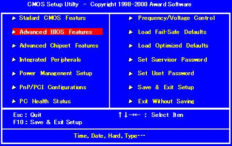
Una vez seleccionada con el cursor pulsamos ENTER y buscamos las opciones
First Boot Device
Second Boot Device
Third Boot Device
Seleccionando cada una de ellas por separado y pulsando ENTER dejamos las opciones como siguen:
First Boot Device CDROM
Second Boot Device Floppy
Third Boot Device HDD-0
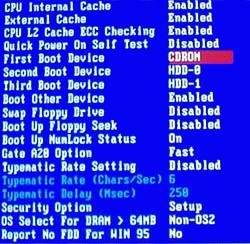
una vez hecho el cambio, guarda la configuración, seleccionamos:
Save & Exit
Pulsa ENTER y la tecla de la letra “y” dos veces
El sistema se reinicia, ten puesto el CD de XP en su bandeja antes de dicho reinicio
La instalación previa de Windows XP comenzará:
Fíjate bien en el mensaje de la parte inferior o superior (según tu BIOS) de la pantalla:
”Presione cualquier tecla para iniciar desde CD”
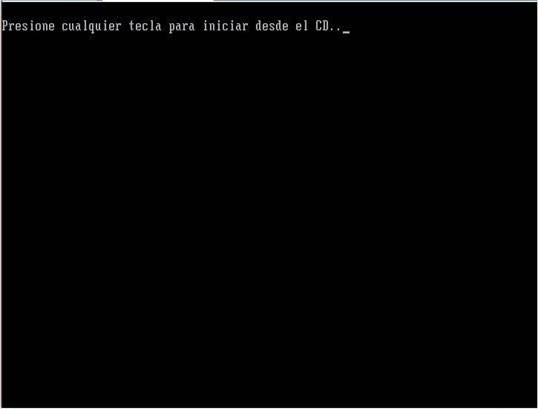
Pulsa cualquier tecla a continuación verás el mensaje:
"El programa de instalación está inspeccionando la configuración de hardware de su equipo..."
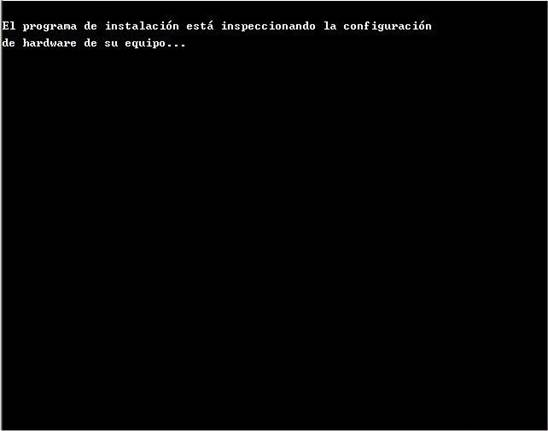
-Pantalla azul
"Programa de instalación de Windows XP"
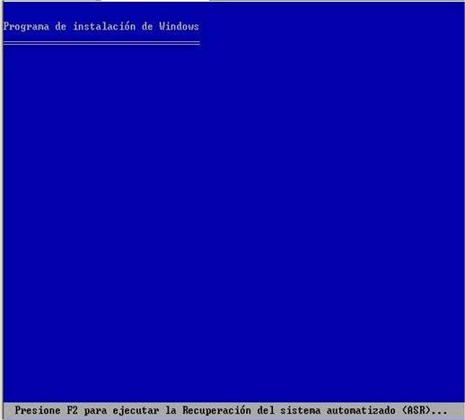
-Esperamos, se están cargando archivos
-NUEVA PANTALLA
Esta parte del programa de instalación prepara Windows XP para que se utilice en este equipo:
-Para instalar XP ahora, presione ENTER
-Para recuperar una instalación de XP usando consola de recuperación,presione la tecla "R"
-Para salir del programa sin instalar XP, presione F3
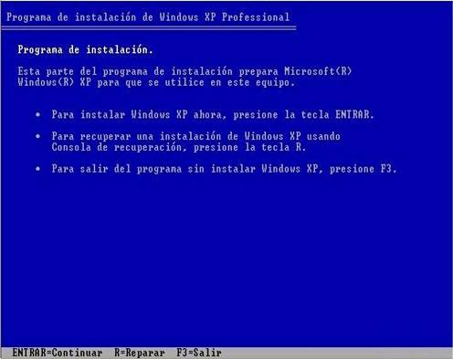
-Pulsa ENTER
-Contrato de licencia de Windows XP (Si estas de acuerdo, acepta con F8, de lo contrario pulsa ESC) para avanzar en su lectura pulsa AV Pág.
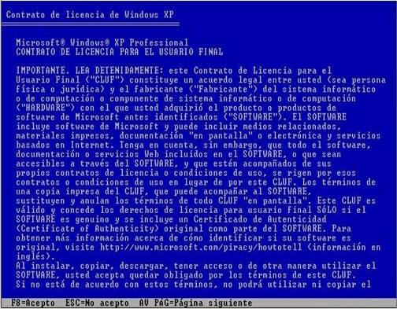
-Windows XP detectara la copia ya instalada y presentará las siguientes opciones:
-Para reparar la instalación seleccionada de Windows XP, presione "R"
-Para continuar la instalación de una copia nueva de Windows XP sin reparar,presione ESC
-Pulsa ESC
A continuación se presentan las particiones que tengamos en el equipo, con las siguientes opciones:
-Instalar Windows XP en la partición seleccionada, presionar ENTER
-Crear partición en espacio no particionado, presionar C
-Eliminar partición seleccionada, presionar D
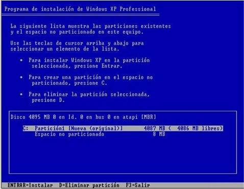
Selecciona la partición a eliminar y pulsa D
-NUEVA PANTALLA
Ha pedido al programa de instalación que elimine la partición
X: Particion1 <Windows XP> [NTFS] <tamaño de la partición>MB (<espacio libre> MB libres)
En disco <tamaño del disco> MB 0 en Id. 0 en bus 0 en atapi [MBR]
-Para eliminar la partición, presione L
-Advertencia: Se perderán todos los datos de la partición
-Presione ESC para regresar a la pantalla anterior sin eliminar la partición
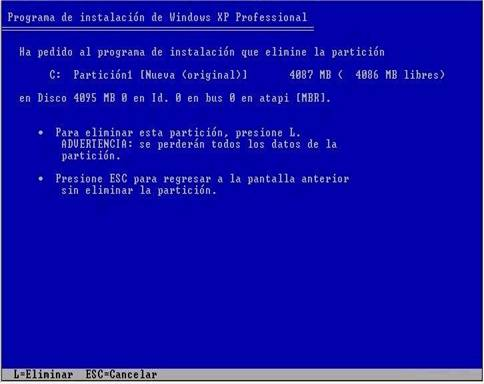
Presionamos L
-NUEVA PANTALLA
-Para Instalar Windows XP en la partición seleccionada, presione ENTER
-Para crear una partición en el espacio no particionado, presione C
-Para eliminar la partición seleccionada, presione D
Selecciona la partición que acabas de eliminar y que aparecerá como “espacio no particionado” (OJO NO la confundas con el espacio no particionado del sistema que ocupa 8 MB)
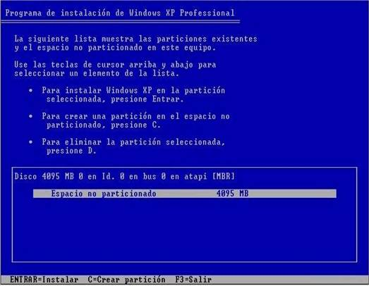
-Pulsa ENTER
-NUEVA PANTALLA
Ha pedido que el programa de instalación cree una partición nueva en disco <tamaño del disco> MB 0 en Id. 0 en bus 0 en atapi [MBR]
- Para crear una partición nueva escriba una tamaño abajo y presione ENTRAR
- Para volver a la pantalla anterior sin crear la partición, presione ESC
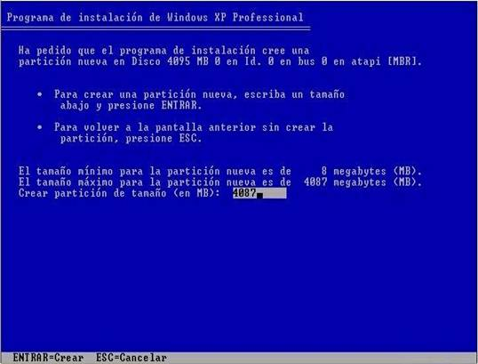
- Pulsamos ENTER
-NUEVA PANTALLA
Estamos ahora de nuevo en la pantalla que muestra la lista de particiones y que vuelve a darnos las opciones:
-Para Instalar Windows XP en la partición seleccionada, presione ENTER
-Para crear una partición en el espacio no particionado, presione C
-Para eliminar la partición seleccionada, presione D
- Nos aseguramos de que está seleccionada la nueva partición y no el espacio no particionado de 8 MB (en caso contrario la seleccionamos con las flechas de cursor) y pulsamos ENTER
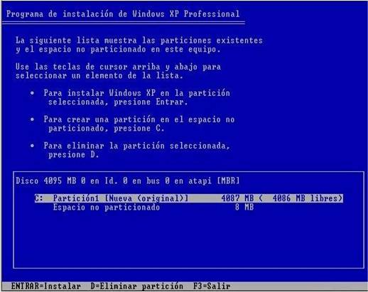
- NUEVA PANTALLA
-Entramos ahora en las opciones de formateo con las siguientes opciones:
-Formatear la partición utilizando el sistema de archivos NTFS rápido
-Formatear la partición utilizando el sistema de archivos FAT rápido
-Formatear la partición utilizando el sistema de archivos NTFS
-Formatear la partición utilizando el sistema de archivos FAT
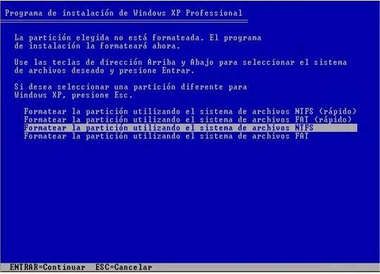
-Seleccionamos tipo de formato y presionamos ENTER
Se recomienda siempre NTFS rápido para discos ya formateados y NTFS para discos nuevos sin formatear.
NOTA: El espacio no particionado de 8 megas, está reservado para la información de partición Windows XP.
-La nueva partición se formateará
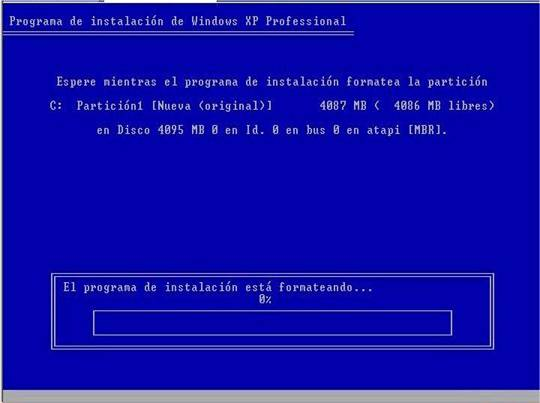
NUEVA PANTALLA
Una vez formateada la partición, comienza la copia de archivos que se produce como último paso de la fase de instalación en modo texto.
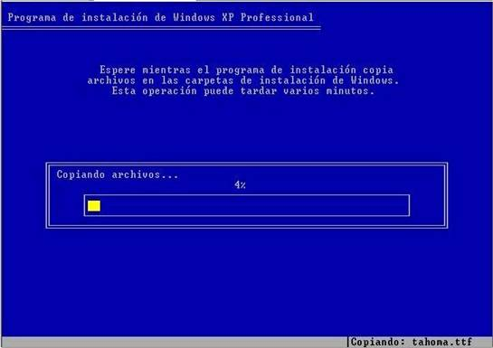
Terminada la copia de archivos el equipo se reinícia solo (NO PULSAR NINGUNA TECLA)
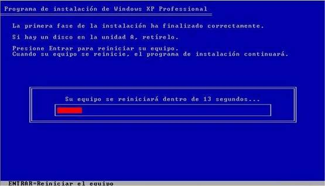
AQUÍ COMIENZA LA INSTALACIÓN PROPIAMENTE DICHA (INSTALACIÓN EN MODO GUI)
NOTA IMPORTANTE: instalate el parche para que no te entre el blaster de seguido te conectes. bajatelo :
Andaluzsoy